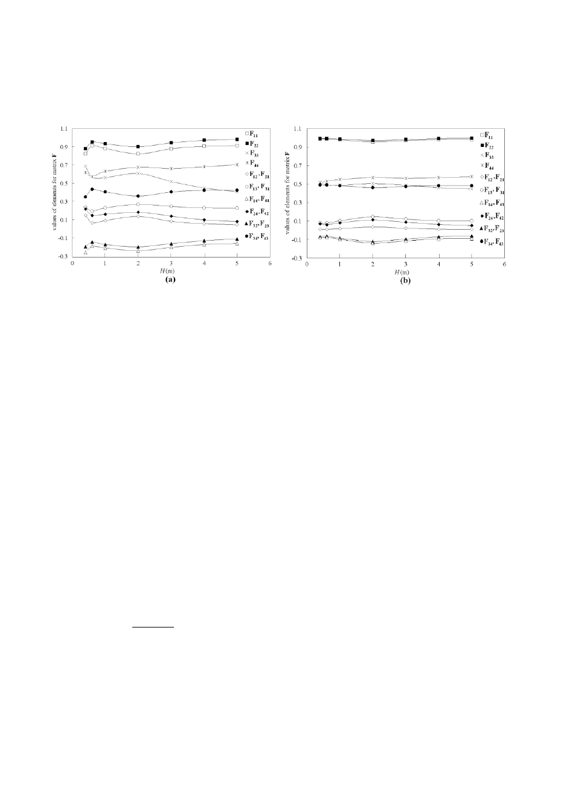
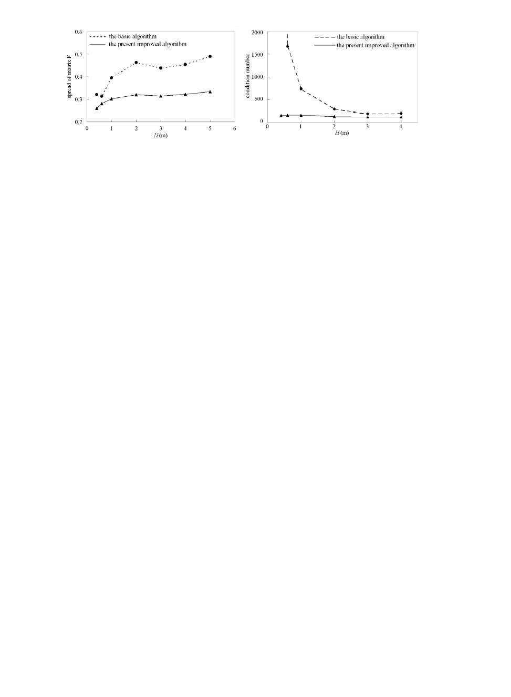

AASRI Procedia 1 ( 2012 ) 27 – 32
2212-6716 © 2012 Published by Elsevier Ltd.
doi: 10.1016/j.aasri.2012.06.006
2012 AASRI Conference on Computational Intelligence and Bioinformatics
Evaluation of Joint Inversion Algorithm with Logarithmic
Treatment for Resistivity Log
Zhenhua Liu
*
, Jianhua Zhang
School of Mechanical Engineering, Xi’an Shiyou University, Xian 710065, China
Abstract
The joint inversion of dual laterolog and dual-induction log was evaluated from the linear inversion theory. The
generalized inversion method was used for the inverse calculation. A couple of parameters in the inversion algorithm were
treated using logarithmic method. The abnormal states resulting from the logarithmic treatment on equations were
analyzed. The effects of both the data-resolution matrix and model-resolution matrix on convergence of inversion process
were discussed. It indicated that the logarithm treatment can not only weaken the abnormal state obviously, but also can
reduce the spread of the data-resolution matrix. The improved inversion algorithm is efficient to enhance the stability and
to improve the behaviors of convergence during the inversion process.
© 2012 Published by Elsevier B.V.
Selection and/or peer review under responsibility of American Applied Science Research Institute
Keywords: Joint inversion; well logging; logarithmic treatment; resistivity
1. Introduction
It is an important way to use of borehole electrical-logging techniques to determine true-formation
resistivity and to estimate original hydrocarbon saturation in petroleum exploration. Joint inversion algorithm
is efficient to improve log interpretation and reservoir evaluation [1]. Since the limited measurement data is
nonlinear for the electrical-logging inversion, there is no unique solution for the logging inversion problem.
The inversion results are really the approximate solution or estimated results for the true values. Hence, it is
* Corresponding author. Tel.: +86-29-88383714; fax: +86-29-88234429.
E-mail address: liuzhenhua@xsyu.edu.cn.
AASRI
Procedia
www.elsevier.com/locate/procedia
Available online at www.sciencedirect.com
28 Zhenhua Liu and Jianhua Zhang / AASRI Procedia 1 ( 2012 ) 27 – 32
worthy of attention the evaluation of inversion results.
In a logging inversion problem, the true reservoir parameters are usually unknown. Hence, except from the
constraint of priori information, it is important to evaluate the inversion solution, i.e. to evaluate the inversion
algorithm. Usually, a common way is to evaluate the reliability and efficiency of an inversion method for an
artificial formation [2,3]. In addition, the electric logging inversion is an intrinsically nonlinear inversion
problem. It can be transformed into a linear inverse problem using appropriate treatment methods, so that the
evaluation criterion of linear inversion theory can be used [4,5]. The present works evaluated the stability and
convergence for joint inversion algorithm of dual-induction log and dual laterolog device using data-resolution
matrix, model-resolution matrix, and condition number according to the linear inversion theory.
2. Algorithm of joint inversion
2.1. Basic Algorithm
The formation was composed of borehole, invasion zone and undisturbed formation. It can be described
by three parameters: true-formation resistivity R
t
, resistivity of invaded zone R
xo
and invasion depth r
i
. A dual
induction logging instrument, such as conventional dual-induction devices [6] or high-resolution dual
induction array [2], can provide two logging curves: deep- and medium-induction log value. A dual laterolog
tool, such as conventional dual laterolog tools [6] or high-resolution dual laterolog array [3], yields deep and
shallow lateral logging value. If a well was logged using both the dual laterolog device and dual-induction
tool, there were four log values were obtained simultaneously. Thus, the four logging data can be used to
inverse the three unknown formation parameters: R
t
, R
xo
and r
i
simultaneously.
Joint inversion is a nonlinear problems, its linearization can yield the linear equations in matrix form:
A X = D (1)
Where, A is a 4u3 Jacobi matrix, X is a 3u1 array denoted inversion model parameter increment. D is a 4u1
array denoted the difference between the logging data and predicted values.
Using damped least squares method [5], the parameter incremental matrix X was solved from following
formula
X=
(
A
T
A
+θ
I
0
)
-1
A
T
D
(2)
Where, θ is damping factor, I
0
is a unit matrix.
After the increment X was solved, the new values of model parameters can be yielded. Then these new
data were input into the forward model to calculate the logging responses and errors. The iterative process
will termination until the convergence condition was satisfied.
2.2. Improved Algorithm
Usually, the variation range of formation resistivity and apparent resistivity obtained from logging
measurement can reach to several orders of magnitude. It is convenient to express these parameters that have
a large change gradient to use logarithmic representation for the purpose of increasing the stability of iteration.
The data of logging response and simulation values from forward model were recorded as
m
n
R
and
s
n
R
(n = 1,
2, 3, 4). The superscript m and s denote the results of measurement and simulation respectively.
R
1
means
deep-induction logging data
R
ID
. R
2
denotes medium-induction logging data R
IM
. R
3
and R
4
were deep and
shallow laterolog responses
R
LD
and R
LS
, respectively.
The resistivities in Eq.(1) were replaced after logarithmic treatment. For this purpose, the transformation
for each item in Eq.(1) during the k-th iteration were
29
Zhenhua Liu and Jianhua Zhang / AASRI Procedia 1 ( 2012 ) 27 – 32
v
s
i
i
xo
s
i
i
t
s
i
i
r
R
A
R
R
A
R
R
A
w
w
w
w
w
w
log
,
log
log
,
log
log
321
(i=1,4) (3)
)log()log(
1
1
k
t
k
t
RRX
(4)
)log()log(
1
2
k
xo
k
xo
RRX
(5)
)log()log(
s
i
m
ii
RRD
(i=1,4) (6)
The invasion depth and related parameters with the length dimension do not been transformed because
they have small change range. Thus, Eq.(1) can be rewritten as
A
*
X
*
= D
*
(7)
The inversion of incremental parameter X* was still calculated using the damped least square method. Its
solution is similar to Eq.(2).
3. Evaluation of Inversion Methods
The inversion results and characteristics from the basic algorithm and the improved algorithm were given
respectively in a synthetic formation model for the purpose of inversion methods evaluation.
3.1. Inversion for a Synthetic Formation
A rotationally symmetric formation model was composed of the borehole, invasion zone, original
formation, upper and lower shoulder with half-infinite thickness. The input data for present calculation were:
true-formation resistivity R
t
=5:m, resistivity of invaded zone R
xo
=20:m, and resistivity both for upper and
lower shoulder R
s
=2:m. The invasion depth r
i
was chosen to be 0.2m, 0.3m, 0.4m, 0.6m and 0.7m
respectively to address the radial responses of invasion zone. The formation thickness H was equal to 0.4m,
0.6m, 1m, 2m, 3m and 4m respectively in order to calculate the effect of H on present inversion algorithm.
The totally four logging data, from shallow- and deep-laterolog device and deep- and medium-induction
logging array respectively, were used in the basic algorithm and the improved algorithm to inverse the three
unknown parameters: R
t
, R
xo
, and r
i
. The relative errors between the inversion computation and the true values
were calculated from the basic algorithm and the improved algorithm respectively. The results were illustrated
in Fig.1 and Fig.2 for basic algorithm and improved algorithm respectively. The horizontal axis denoted the
formation thickness the vertical axis was the related error of inversed results with true model values.
The present calculation indicated that the inversed results deviated from the true values of formation
model obviously for thin beds (H<1m) because of the strong effects of shoulder on logging devices. It is
obvious that the related errors of inversed R
t
, R
xo
and r
i
from the improved algorithm were less than those of
basic algorithm.
The main task of inversion for logging data is to determine the true-formation resistivity, furthermore, to
evaluate the initial water saturation and oil/gas saturation. Therefore, the inversion of true-formation
resistivity R
t
is much important. The error of inversed R
t
from the improved algorithm is less than 5% when
invasion depth is less than 0.7m and the formation thickness H>1m, as shown in Fig. 2a. Yet the basic
algorithm yielded great errors such as 30% as shown in Fig.1a.
The present calculations also illustrated that both the convergence and stability of inversed parameters
from the present improved algorithm are better than basic algorithm.

30 Zhenhua Liu and Jianhua Zhang / AASRI Procedia 1 ( 2012 ) 27 – 32
Fig. 1. Related errors of inversion results from the basic algorithm for (a) true-formation resistivity, (b)invasion-zone resistivity and (c)
invasion depth
Fig. 2. Related errors of inversion results from the improved basic algorithm for (a) true-formation resistivity, (b)invasion-zone resistivity
and (c) invasion depth
3.2. Evaluation for Linear Inversion Method
Linear inversion theory provides the criterion of evaluation for inversion methods [4,5]. The mhn core
matrix A was treated using the method of singular value decomposition:
A=U/V
T
(8)
Where, U and V were mhm and nhn matrix respectively. / was a mhn diagonal matrix composed of the
eigenvalues of A
T
A. Thus, the auxiliary information corresponding to the observed data and model parameters
can be obtained such as data-resolution matrix F:
F=UU
T
, (9)
and model-resolution matrix R :
R=VV
T
. (10)
The data-resolution matrix is a criterion to fit the observed data quality. The closer to the unit matrix is
the data-resolution matrix, the less is the correlation for the logging data, and the higher is the resolution. In
addition, the data-resolution matrix is independent with the logging data. Matrix F is a function as the
formation model, the geometry structure of logging devices, and the solving process. The model-resolution
matrix is a criterion to discriminate the inversion model parameters and real formation parameter. When it is a
unit matrix, the inversion results can completely discriminate the formation parameters. The matrix is
independent with the logging data as well and depends mainly on the responding equation.
In addition, the condition number of a matrix denotes the ill-conditioned behaviors of a matrix. The
greater is the condition number, the stronger will be the ill-conditioned behaviors of the ill-conditioned matrix,
and the poorer is the stability of inversion calculation. The ill-conditioned behavior of an equation is inherent

31
Zhenhua Liu and Jianhua Zhang / AASRI Procedia 1 ( 2012 ) 27 – 32
and only dependents on the core matrix A.
During the joint inversion of dual laterolog data and dual-induction log responses, the data-resolution
matrix F, model-resolution matrix R and the condition number of a matrix were calculated for both the basic
algorithm and the improved algorithm while the invasion depth r
i
=0.4m. F was a symmetric 4h4 matrix.
When the main diagonal elements of matrix F were equal to 1 and the off-diagonal elements were zero, high
resolution of the measurement data would be obtained. Fig.3a and Fig.3b illustrated the values of matrix F
with the formation thickness from the basic algorithm and the present improved algorithm respectively. The
horizontal axis denotes the thickness of the formation.
Fig. 3. the values of data-resolution matrix F: (a) basic algorithm, (b) the present improved algorithm
In the present improved algorithm, the main diagonal elements of F
11
and F
22
were closer to 1 and the
off-diagonal elements F
21
and F
12
were closer to zero, as shown in Fig.3(b). The values of F
31
, F
13
, F
32
, F
23
,
F
41
, F
14
, F
42
, and F
24
were approximately 0.1 or -0.1. Though the values of F
43
, F
34
, F
33
and F
44
are around
at 0.5, the resolution of measurement data were still modified obviously comparing with the basic algorithm,
as shown in Fig.3(a). Hence, the higher resolution was obtained from the present improved algorithm.
More quantitative description can be performed by calculating the spread of the data-resolution matrix:
][)(
11
ij
M
i
M
i
ijp
FFS
G
¦¦
(11)
Fig.4 illustrated the variations of the spread of data-resolution F with formation thickness for the basic
algorithm (dash line) and the present improved algorithm (solid line) respectively. Either a thin layer or a
thick formation, the spread from the present improved algorithm is less than that from the basic algorithm. It
means that the high resolution of measurement data was obtained from the present modified algorithm.
For the joint inversion of dual laterolog and dual-induction log, either the basic algorithm or the present
improved algorithm, the model-resolution matrix R was a 3u3 unit matrix that corresponded to the three
inversed parameters: true-formation resistivity R
t
, resistivity of invaded zone R
xo
and invasion depth r
i
. It
means the inversion can yield the formation parameters, but it does not indicate that these parameters are the
same as the real models exactly. It only reflects that there is not correlation among these model parameters.
The condition number of A
T
A in Eq. (2) reflects the behaviors of ill-conditioned matrix. The condition
number of both the basic algorithm and the present improved algorithm were calculated respectively for the
joint inversion of dual laterolog and dual-induction log with damping factor:
TO
TO
T
min
max
][ IAAcond
T
(12)
Where
max
O
and
min
O
are the maximum and minimum singular value for A
T
A respectively. Figure 5 shown

32 Zhenhua Liu and Jianhua Zhang / AASRI Procedia 1 ( 2012 ) 27 – 32
the variation of condition number with the formation thickness while the damping factor θ=0.01.
Fig. 4 variation of spread of data-resolution matrix F with thickness Fig. 5 variation of condition number with formation thickness
Figure 5 indicated that less value of condition number from the present improved algorithm was obtained.
Thus, the ill-conditioned behaviors of Eq.(1) are reduced strongly, so that the satisfied stability in the present
joint inversion process was obtained.
4. Conclusions
The formation resistivity and apparent resistivity measured from logging tools usually vary within a
range of several orders of magnitude. It is an efficient way to treat such parameters by using logarithmic
representation method in inversion process [7].
The present improved joint inversion algorithm introduces less error than the basic inversion algorithm.
Both the convergence and stability of inversed parameters from the improved algorithm are better than basic
algorithm.
The ill-conditioned behaviors of inversion equations, the spread, the inversion resolution and the
convergence can be improved obviously from the present algorithm as well.
References
[1] Strack K M. Joint inversion of resistivity logs: limit and possibilities. J Pet Tech 1997(Nov);1234-1236
[2] Qingzhong Guo. Inversion of radial conductivity distribution by array induction logs. Well Logging
Tecnology (in Chinese) 2003;27:207-211.
[3] Zhiqiang Li, Shaogui Deng, Yiren Fan and Hu Li. On inversion of array laterolog responses in fractured
reservoir. Well Logging Tecnology (in Chinese) 2010;34:138-142
[4] Jianghai Xia, Richard D. Miller and Yixian Xu. Data-resolution matrix and model-resolution matrix for
rayleigh-wave inversion using a damped least-squares method. Pure and Applied Geophysics 2008; 165:
1227-1248
[5] Sunxiang Ye and Zuoshu Pan. A Study of estimating criterion and resolution of geophysical linear
inversion. Journal of Xi'an Shiyou University (in Chinese) 1994; 9(4):15-18
[6] Jay Tittman. Geophysical Well Logging. New York: Academic; 1986.
[7] Zhenhua Liu and Chunzeng Lin. Joint inversion of induction/ lateral/Normal logs, case studies at Shenli
field site, China. Journal of Petroleum Science and Engineering 2002; 34:55-64